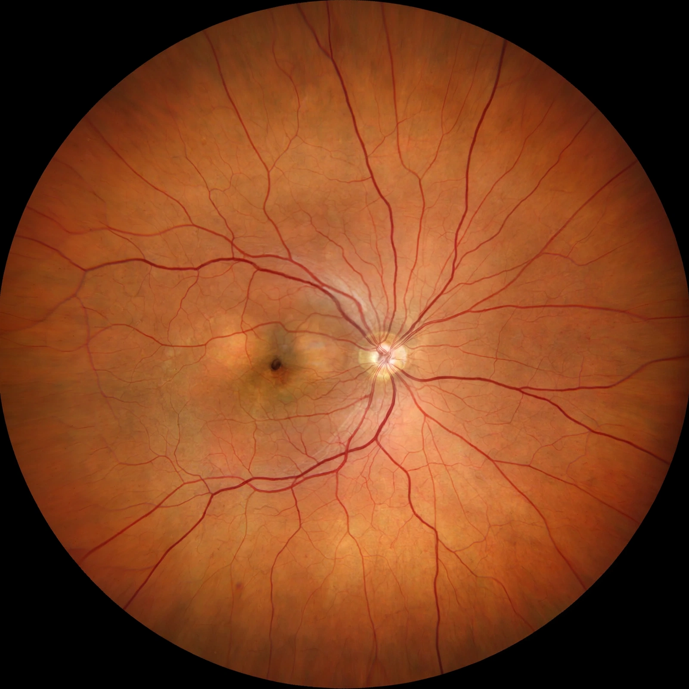

Retina
From Wikipedia, the free encyclopedia

The retina is the light-sensitive layer of tissue lining the inner surface of the back of the Eye of vertebrates and some other animals. It converts photons into neural signals via some 120 million rods and 6–7 million cones, pre-processes contrast and colour in layered circuitry, and sends the result through the optic nerve. Its fovea gives humans their sharp central vision; its diseases (macular degeneration, diabetic retinopathy, detachment) are leading causes of blindness.
Structure
Unusually, the retina's photoreceptors sit at the back, behind the wiring — light passes through the neural layers first (cephalopod eyes are built the sensible way, without a blind spot). Bipolar, horizontal, amacrine and ganglion cells compute edges and colour opponency before the brain sees anything; the retinal pigment epithelium recycles photopigment and phagocytoses shed discs.
Clinical and technological
Ophthalmoscopy (and now OCT imaging) reads the body's only directly visible neural and vascular tissue — AI screening of retinal photos detects diabetic disease and predicts cardiovascular risk. Retinal prostheses and gene therapy (Luxturna, 2017, for RPE65 blindness) opened the era of engineered vision.